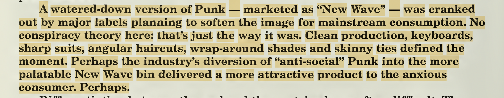
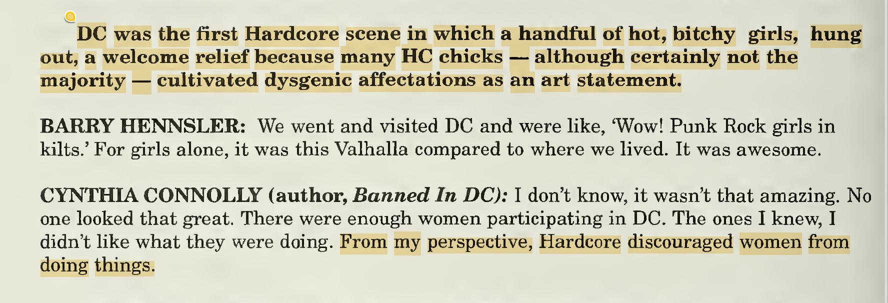
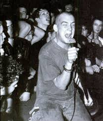

NEW WAVE
Bands like Blondie, Devo, the Runaways, and the Police crossbreed punk with other (poppier) genres and start gaining mainstream traction under the banner “new wave.” Sort of a commercially-viable mashup of punk, glam, and disco, with a heavy dose of the synthesizer on top of everything. Sometimes referred to as “power pop” or just alternative music.
Hanging On The Telephone, Blondie (1978)
Rebel Yell, Billy Idol (1984)
Several of these acts (like Blondie and the Runaways) were originally categorized as punk bands in the 70s, but eventually came to be associated more with new wave as time went on. This disproportionately happened to women-led punk bands in the 80s, mostly because it’s easier to think of women as pop than punk. That said, it’s not fair to suggest that bands like Blondie got purposely shuffled out of punk by some nefarious tribe of bro-punk diehards, because that’s not necesarily what happened. What did happen is that in the 80s, punk split up and became many things: new wave, post-punk, goth (which often overlap), and hardcore (a specific U.S. phenomenon). Different demographics gravitated toward different scenes, and women and queer people largely moved into the new wave/post punk/goth scenes as opposed to hardcore for reasons which will become apparent shortly.
If we want to get more specific here, women and queer-led acts were often categorized as new wave specifically as opposed to post-punk or goth, both of which had stronger subcultural (and therefore masculine) connotations than new wave. But that’s a story far beyond the scope of this project. That’s why I specifically use new wave in my lineage here though, if you were curious.
Also, let me just point out that new wave usually gets described as punk getting “rebranded” and “commercialized,” which I think is pretty fucking stupid considering that all of the boy punk icons of the 70s were also trying to get famous. Their aesthetics were just more stereotypically masculine so people took them seriously. But whatever.
HARDCORE

God forbid I put myself into any situation where I have to talk about hardcore, yet here we are. If you’re some diehard old-school hardcore guy who’s going to get mad at me about my opinions on Henry Rollins or Minor Threat or whatever, why don’t you go make a post on r/hardcore or something so I don’t have to hear about it.
Hardcore punk emerges in the early 80s in Southern California. It takes most of its cues from the earlier California punk scene in San Francisco, which emerged in the 70s as a rejection of hippy culture. Likewise, hardcore in the 80s frames itself as a rejection of 
I Just Want Some Skank, Circle Jerks (1980)
Rise Above, Black Flag (1981)
Hardcore’s sound in this era was all about playing as fast and loud as possible. Screaming as loud as you can. Its culture is intensely, intensely hypermasculine. Women were rarely seen in crowds, and even more rarely onstage.1 Unsurprising that a culture designed for angry white men to rile each other up purely for the purposes of getting more angry and punching each other in the mosh pit alienated most women.
80s hardcore nominally presents itself as “angry about politics” during the Reagan era, but it’s hard for me to buy these claims when the scene curates a space that celebrates the violent expression of white masculine rage and so many of its participants believe that they are genuinely oppressed because people don’t like their buzz cuts.
Fashion in this era becomes basic and re-masculinized—most of these young men adhere to a uniform consisting of jeans, and dirty t-shirt, combat boots, and whatever dangerous accessories you could find at the army surplus store.
Below are a few notable excerpts from Steven Blush’s American Hardcore: A Tribal History. This guy unilaterally sucks and you should not read this book seriously, but it is accidentally a great text if you’re trying to get an insider perspective on gender dynamics in 80s hardcore culture (and/or hardcore misogyny in 2001, which is when this book came out):
ON GAY MASCULINITY IN THE SCENE
FROM THE AUTHOR: “A few powerful HC outfits starred militantly gay frontmen. The best, for some reason, came from Austin: the Big Boys' Randy "Biscuit" Turner, The Dicks' Gary Floyd, and Dave Dictor of The Stains (later MDC). Floyd and Dictor were America's worst nightmare: foul-mouthed homosexual communists. While Hüsker Dü certainly never announced themselves as gay, "Pride" — off their noted Zen Arcade album — sounds like a gay HC anthem.” (36)
GARY FLOYD (Dicks): "I'm not that big of a puss and if anybody ever fucked with me, its like, Yeah, I'm queer, fuck you — I'll beat your fuckin' ass!' Luckily I had some tough guys in the band who'd back me up on that. I was always up-front about it.” (37)
ON WOMEN IN THE SCENE
FROM THE AUTHOR: “Most Hardcore chicks rejected femininity. Their ideal was the tomboy — in contrast to the big-haired bitches you'd find sucking dick backstage at Metal concerts. The truth is, few gorgeous women participated in Hardcore — many of them were nasty, ugly trolls.” (35)
LAURA ALBERT: “I was always aware of this very male sexual energy going on, and since I wasn't a boy, I couldn't be a part of it. I wanted something from these people but I knew I didn't want to actually have sex with them. I had this feeling that I would've gotten more if I was a boy.” (35)
LAURA ALBERT (NYHC scene): The role of women in the scene was as the sexual outlet or as something that hung on the arm and stood on the side. Women weren't welcome in the mosh pit; girls who did mosh — that was some weird tomboy thing. You weren't welcome in the bands. Girls didn't welcome each other, either; there was no camaraderie. The only thing you could really offer was sex. It pissed me off that I had to do it, but I was also grateful for it 'cause I got in there in a good way. I wanted that power, too, so I learned to play the game. I did what I had to. (35)
MARIA MA (Raleigh scene): If you were a girl and acted a certain way that the guys could deal with — like you were asexual and you got in the pit and stagedived and knew the music — they could accept you. On the flipside of that, if you wore lots of makeup and leather minis, they could deal with that, too. (35)

(138)
L.A. ⇉ D.C.
In the mid-80s, hardcore re-centers in D.C. around figures like Ian MacKaye, who I only bother mentioning by name here because he’s going to become important to our emo story here in a moment. He’s known for shaving his head and convincing a lot of of young white men to stop doing drugs and convert to veganism instead. He was also in beloved hardcore band Minor Threat, and then a series of later bands that people cite as the origin of emo. He runs famous indie record label Dischord and is big into DIY and political organizing. Thinks fashion is vapid and distracting from what really matters. So when some guy starts trying to explain emo to you and talks about how real emo only happened in D.C., this is what he’s talking about. (He’s like a god to these people.)

[EXCERPTED FROM AMERICAN HARDCORE]
IAN MACKAYE (Minor Threat): "For a few minutes, Sham 69 were the truest of all Punk bands. They were populist — really into the kids. The Sex Pistols were ultra-fashion; Sham 69's fashion was work-wear. They were Punk Rockers without the glam. My thing's been anti-fashion: bands like Sham reflected that — a major influence in our direction." (13)
What ??????? ⬇️
IAN MACKAYE (Minor Threat): “You can say it was total misogyny, or that here were these boys who forced an issue and made it possible for an era where more women are in bands than ever before. If you walk into a show now and see a band with three women and a boy, do you even think twice about it? No! So shoot some props out to the Hardcore kids.” (35)
80S HARDCORE BECOMES —> “EMOCORE”
Some music journalist calls an Ian MacKaye band “emocore” (which he does not appreciate) and it sticks. Emocore (“emotional hardcore”) refers to hardcore bands that sing about being sad instead of being angry.
I guess this was subversive for the intensely hypermasculine hardcore scene of the time, but I’m also really obsessed with this essay by [NAME] about how 80s-90s emo is actually just a giant ripoff of women’s lib music. So I’m not all that impressed with first wave emo’s notion that “the personal is political.” (Did Ian come up with that? I can’t remember.) Regardless, this is where emo gets is name, becomes introspective, and starts to root out some of hardcore’s more violent, hypermasculine tendencies. We’ll replace hardcore’s alpha-male masculinity with another secret kind of masculinity in the 90s.
1 Blush, American Hardcore: A Tribal History (Feral House, 2001): 34-35.